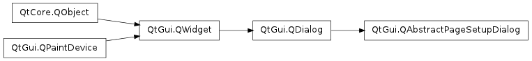

QAbstractPageSetupDialog ¶

Inherited by: QPageSetupDialog
Detailed Description ¶
The PySide.QtGui.QAbstractPageSetupDialog class provides a base for implementations of page setup dialogs.
- class PySide.QtGui. QAbstractPageSetupDialog ( printer [ , parent=None ] ) ¶
-
Parameters: - printer – PySide.QtGui.QPrinter
- parent – PySide.QtGui.QWidget
Constructs the page setup dialog for the printer printer with parent as parent widget.
- PySide.QtGui.QAbstractPageSetupDialog. printer ( ) ¶
-
Return type: PySide.QtGui.QPrinter Returns the printer that this page setup dialog is operating on.